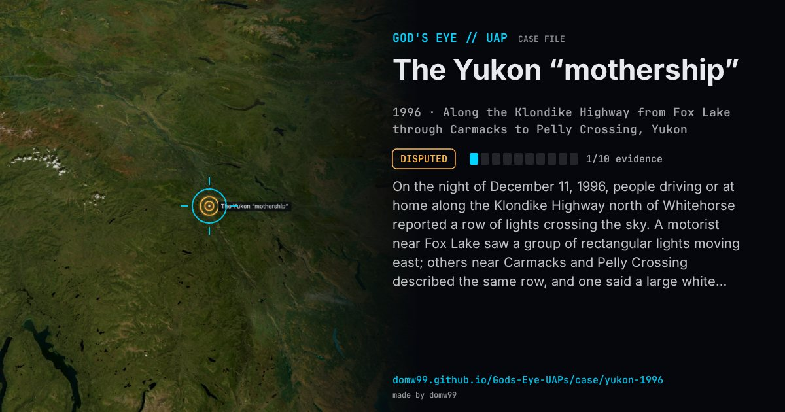

The Yukon “mothership”

On the night of December 11, 1996, people driving or at home along the Klondike Highway north of Whitehorse reported a row of lights crossing the sky. A motorist near Fox Lake saw a group of rectangular lights moving east; others near Carmacks and Pelly Crossing described the same row, and one said a large white beam came from the centre of an object as big as a football stadium. The Yukon UFO researcher Martin Jasek interviewed the witnesses over the next two years and put at least 31 of them in four separate areas, and concluded that they had seen a huge “mothership”. In 2022 the Royal Canadian Mint put the case on a glow-in-the-dark silver coin, “The Yukon Encounter”.
Explanation
The satellite watcher Ted Molczan matched the time and direction to the re-entry of the rocket body that launched Cosmos 2335, and the skeptic Robert Sheaffer repeated that in 2012; a re-entry breaks up into a row of glowing fragments, which fits a line of lights. Martin Jasek, who collected the witnesses’ accounts over two years, concluded they saw a single enormous craft, and some witnesses describe a beam and a slow, close object that a re-entry does not explain.
What was seen
Shape: A row of rectangular lights, taken by some for the windows of a craft the size of a stadium; one witness describes a white beam
Witnesses: At least 31 people in four places along the highway, many of them in cars
Duration: Minutes
Sources
- Royal Canadian Mint — Canada’s Unexplained Phenomena: The Yukon Encounter (2022)
- Whitehorse Daily Star — Yukoners to put UFOs under scrutiny
- UFO-Forschung — re-entries of space debris (the Cosmos 2335 explanation)
Browse
- Canada
- 1990s
- Disputed
- Mass sightings
- Many independent witnesses
- Lights and fireballs
- Formations and rows of lights